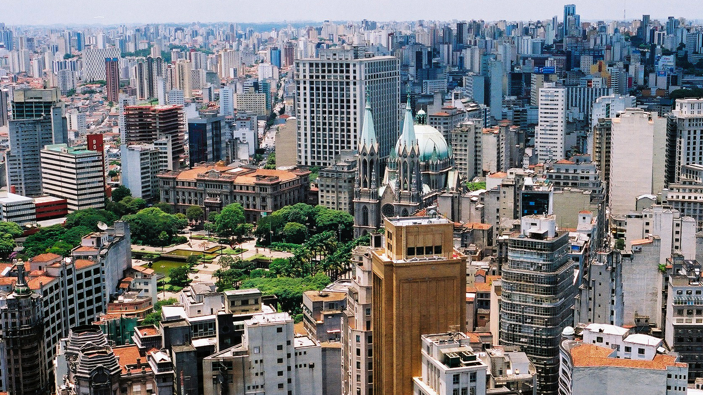
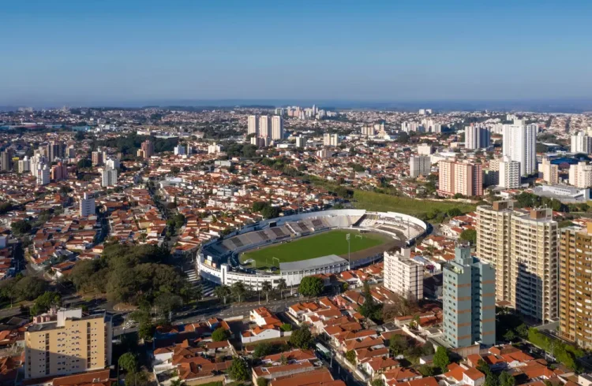
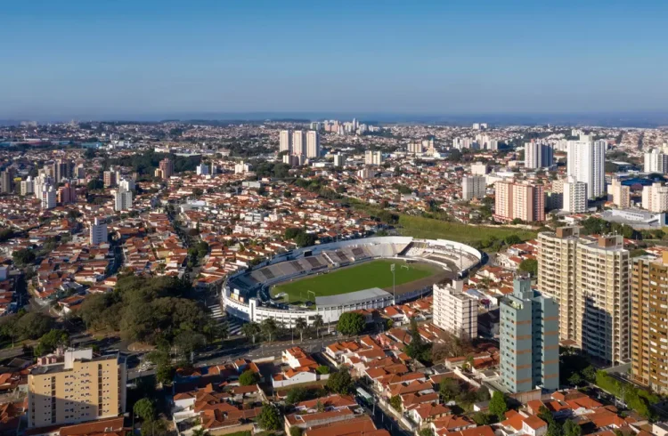

As cinco maiores cidades do estado de São Paulo
1. São Paulo
A maior cidade do Brasil, e centro econômico, financeiro e cultural do país.
População: ~12,3 milhões



Voltar ao topo
Pagina Principal
2. Guarulhos
Grande polo industrial e abriga o principal aeroporto internacional do Brasil.
População: ~1,4 milhões

Voltar ao topo
Pagina Principal
3. Campinas
Importante centro de tecnologia e pesquisa, conhecida como "Vale do Silício brasileiro".
População: ~1,2 milhões
 

Voltar ao topo
Pagina Principal
4. São Bernardo do Campo
Importante polo industrial e sede de grandes empresas automobilísticas.
População: ~833 mil

Voltar ao topo
Pagina Principal
5. Santo André
Também parte do ABC Paulista, com destaque para a industria e comércio.
População: ~716 mil


Voltar ao topo
Pagina Principal